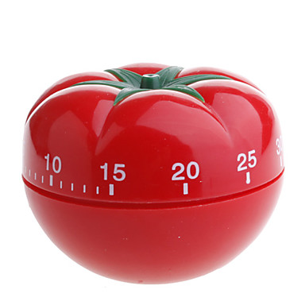

FAQ - Perguntas realizadas frequentemente (tradução)
-
O que é a técnica Pomodoro?
-
Porque esta técnica tem esse nome?
-
Como utilizar este site?
A técnica Pomodoro consiste em definir uma quantidade de tempo para se manter concentrado em uma tarefa específica. Segundo alguns estudos sobre o funcionamento do cérebro humando, uma pessoa, em média, consegue se manter concentrado em uma tarefa initerruptamente por 15 a 30 minutos.
De acordo com os pesquisadores, a partir desse intervalo de tempo o cérebro começa a perder eficiência e portanto é recomendado descansar e buscar fazer alguma outra atividade. As atividades mais comuns são alongamentos, ir ao banheiro ou fazer uma pausa para tomar café. Alguns resultados mostram que uma pausa de apenas 5 minutos já trás grandes benefícios para a concentração no próximo momento de trabalho.
O nome da técnica Pomodoro se deriva do cronômetro utilizado, geralmente na cozinha, para marcar o tempo necessário para o preparo de algum alimento.
A imagem abaixo ilustra um modelo deste equipamento:

Para utilizar o site, o usuário deve entrar com os valores de minutos:segundos (mm:ss) que deseja aguardar até que o cronômetro toque seu sinal, avisando que o tempo acabou.
Os botões são usados para aumentar o valor da cédula, enquanto os botões são usados para diminuir.
O botão "Começar!" é usado para iniciar o cronômetro, enquanto o botão "Pausar!" é usado para pausar e parar o alarme sonoro.